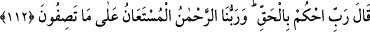

112. (Muhammed:) “Rabbim! (Onlar hakkında) adaletinle hükmünü ver. Bizim
Rabbimiz Rahmân’dır. Sizin anlattıklarınıza karşı yardımı umulandır.” dedi.
Rasûlullah (s.a.) dedi ki “Rabbim! (Onlar hakkında) adaletinle hükmünü ver.”
Bizimle Mekke halkının arasında, azablarını öne alıp şiddetlendirerek adâletle hükmet.
Bu âyette, Hz. Peygamber (s.a.)’in duâsı nakledilmektedir.
“Bizim Rabbimiz Rahmân’dır.” Kullarına çok rahmet edendir. Eğer er-Rahmân
kelimesi “nimetlendirme” anlamında olursa fiilî sıfatlardan olur. Eğer onunla “hayrın
ulaştırılması” kastedilirse bu taktirde zâtî sıfatlarından olur.
“Sizin anlattıklarınıza karşı yardımı umulandır.” dedi.” O’nun yardımına sığınılır.
O’ndan yardım istenir. Çünkü müşrikler, güç ve kuvvetin ancak kendilerinde olacağını,
İslâm ve dinin sancağı an be-an baş aşağı olacağını, tehdit edildikleri şey gerçek
olsaydı, azâbın üzerlerine ineceğini ve bunlardan başka bir takım hayırsız sözler
söylüyorlardı.
Yâni siz, uygunsuz söz söylüyorsunuz. Biz ise Allah’tan onlara karşı yardım dileriz ve
O’nun dergâhından ümitvârız.
Murâdını, isteğini padişahlık katından iste
Çünkü hiç kimse o dergâhtan ümitsiz olmaz
Cenâb-ı Hak, Rasûlü’nün duâsını kabûl etti ve inkârcıların isteklerini boşa çıkardı.
Durumlarını değiştirdi. Onlara karşı dostlarına yardım etti. Bedir gününde onların
başlarına gelenler geldi.
Âyette işâret vardır ki Allah’tan ancak müstehak olan istenir. İtâatkâr veya âsî olan
için ancak hak ettikleri şeyin gerçekleşmesi beklenir. Zaten ezelde Allah’ın bu husustaki
hükmü cereyan etmiştir. O’nun rahmeti yüz çeşit olsa da nihâyetsizdir. Nitekim Nebî
(a.s.); “Allah’ın rahmeti yüz bölümdür.”[225] buyurmuşlardır.
Akıllı kişiye gereken, ömrün uzun oluşuna, mal ve evlâdın çokluğuna aldanmamaktır.
Çünkü bunlara aldanmak, kâfirlerin sıfatlarındandır.
Mü’minlerin emîri Hz. Ali (r.a.)’in sözlerinden birisi şöyledir: “Kime dünyalığı
genişletilir de, onunla kendisine tuzak kurulduğunu anlamazsa, onun aklı noksandır.”
İbrahim b. Edhem bir adama şöyle dedi: “Senin için uykudaki bir dirhem mi, yoksa
uyanıkken olan bir dînar mı daha sevimlidir?” Adam: “Uyanıkken olan bir dînar.” dedi.
Bunun üzerine İbrahim b. Edhem: “Yalan söylüyorsun. Çünkü dünyada sevdiğin sanki
uykuda sevdiğin gibidir. Âhirette sevmediğin ise sanki uyanıkken sevmediğin gibidir.”
dedi.
Allah’tan bizi günahlardan korumasını ve hayra muvaffak kılmasını niyâz ederiz.[226]